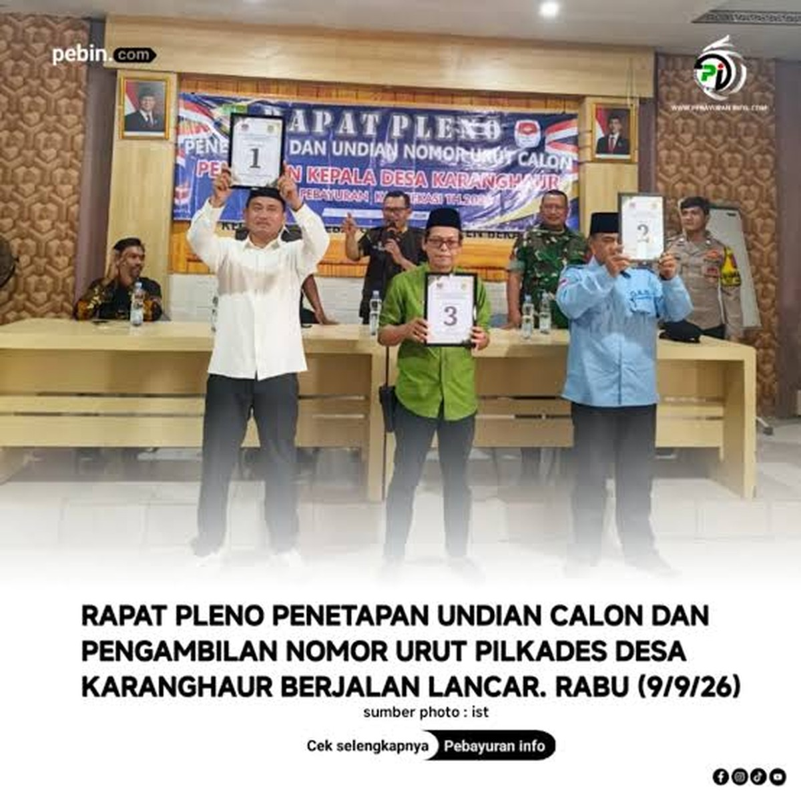

Pesta Demokrasi Karanghaur: Tiga Putra Terbaik Desa karanghaur
Bersaing Sehat di Pilkades kec Pebayuran kab bekasi
BERITA DAERAH
Pelaksanaan pemilihan Lurah
di Desa Karang Haur
📅 20 September 2026📍 Karang Haur,kab.Bekasi

KARANG HAUR, BEKASI —
Suasana demokratis dan penuh kekeluargaan menyelimuti pelaksanaan pemungutan suara Pemilihan Kepala Desa (Pilkades) Karanghaur, Kecamatan Pebayuran, Kabupaten Bekasi. Warga berbondong-bondong mendatangi Tempat Pemungutan Suara (TPS) untuk menentukan arah masa depan desa dengan tertib dan damai.Pilkades Karanghaur kali ini menyajikan kontestasi yang sehat dengan menghadirkan tiga putra terbaik desa sebagai calon pemimpin, yaitu:
1 ABDUL ROHIM
2 SOLEHUDDIN SE
3 JUHENDI AL HAURI SULAEMAN
INFORMASI PENTING
Panitia memastikan seluruh proses berjalan dengan asas jujur dan adil di bawah pengawasan ketat aparat keamanan. Warga dan tokoh masyarakat sepakat bahwa kedewasaan berpolitik ini menjadi modal utama demi kemajuan Desa Karanghaur ke depan
Keterangan Pihak Terkait
Bagian ini dapat digunakan untuk menampilkan
pernyataan resmi dari pihak pemerintah desa,
kepolisian, pemerintah daerah, atau pihak
terkait lainnya.
Kondisi Terkini
Informasi terbaru akan diperbarui setelah
tersedia keterangan yang dapat diverifikasi.